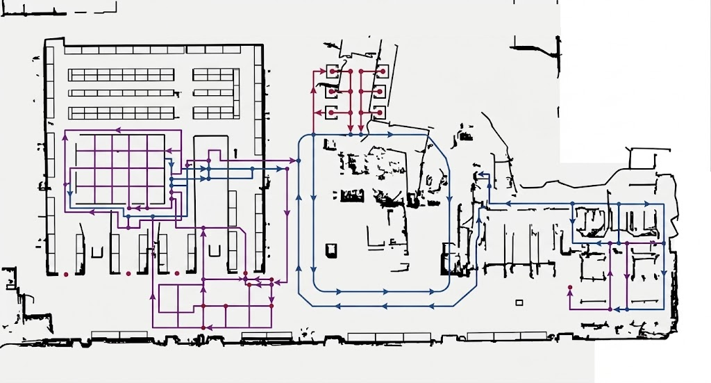

硬件模组调试只调用 AGV-01 上选定的一个模组。底盘支持地图方向控制，机械臂支持关节与坐标系点动，相机和夹具按独立控制参数运行。
当前处于生产模式
进入调试模式后启用控制按钮。
生产模式
底盘地图与方向控制
方向控制叠加在当前地图上，操作后同步刷新 AGV 位置和空间坐标
地图 V3.2实时定位

AGV-01 方向控制
进入调试模式后启用点动
X 18.400 m
Y 3.200 m
θ 90.0°
DOOR-A-01
机械臂调试
设备信息、运动速度和点动控制均来自当前机械臂配置
设备名称协作机械臂 ARM-01DOBOT CR10
IP 地址192.168.20.22控制端口 5000
连接状态在线通信正常
0.0000°
-15.0000°
45.0000°
0.0000°
60.0000°
0.0000°
AGV 流程调试读取“流程与动作”中的已有流程。可运行选中节点或整条流程，所有调试动作仅在进入设备调试模式后启用。
流程节点